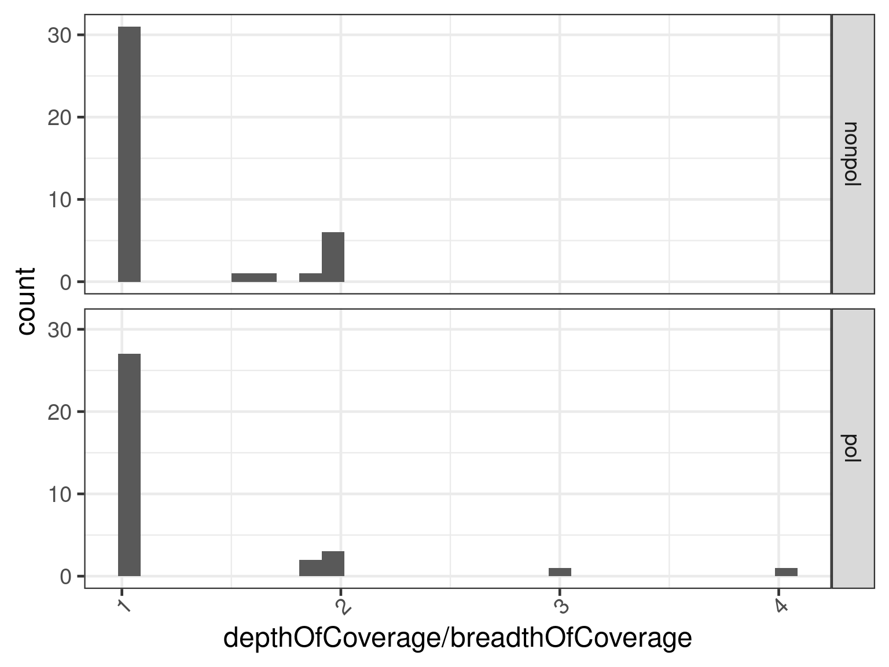

Gene body coverage analysis in R
Per Unneberg
2023-12-19
Source:vignettes/genecovr.Rmd
genecovr.RmdAbout
This vignette describes analyses of gene body coverage and other
genome assembly evaluation metrics with in R using the
genecovr package. genecovr contains
functionality for parsing alignment files, calculating gene body
coverages, and generating simple QC metrics to assess assembly quality
output. Before we start with the example analysis, we describe how
genecovr represents pairwise alignments.
R setup
library(viridis)
library(RColorBrewer)
bw <- theme_bw(base_size = 18) %+replace%
theme(axis.text.x = element_text(angle = 45, hjust = 1, vjust = 1))
theme_set(bw)
color_pal_4 <- brewer.pal(name = "Paired", n = 4)
psize <- 3On object representation of pairwise sequence alignments
genecovr has functionality to read pairwise sequence
alignment files and converts the pairwise alignments to
genecovr::AlignmentPairs objects. An
AlignmentPairs object is a subclass of the Bioconductor
class S4Vectors::Pairs. A Pairs object in turn
aligns two vectors along slot names first and
second, and the AlignmentPairs object adds
slots for the query and subject, and possibly extra slots related to
additional information in the alignment file. The query and subject are
GenomicRanges::GRanges objects or objects derived from the
GRangesclass.
Analysing gene body coverage
In this section we analyse the mapping of a transcriptome to a
non-polished and polished assembly. The mapping results consist of two
gmap files in psl format, transcripts2nonpolished.psl and
transcripts2polished.psl. In addition there are fasta index
files for both assemblies (nonpolished.fai and
polished.fai) and for the transcriptome
(transcripts.fai). The fasta indices are used to generate
GenomeInfoDb::Seqinfo objects that can be used to set
sequence information on the parsed output. We load the fasta indices and
parse the psl files with genecovr::readPsl, storing the
results in an genecovr::AlignmentPairsList for
convenience.
assembly_fai_fn <- list(
nonpol = system.file("extdata", "nonpolished.fai",
package = "genecovr"
),
pol = system.file("extdata", "polished.fai",
package = "genecovr"
)
)
transcripts_fai_fn <- list(
nonpol = system.file("extdata", "transcripts.fai",
package = "genecovr"
),
pol = system.file("extdata", "transcripts.fai",
package = "genecovr"
)
)
assembly_sinfo <- endoapply(assembly_fai_fn, readFastaIndex)
transcripts_sinfo <- endoapply(transcripts_fai_fn, readFastaIndex)
psl_fn <- list(
nonpol = system.file("extdata", "transcripts2nonpolished.psl",
package = "genecovr"
),
pol = system.file("extdata", "transcripts2polished.psl",
package = "genecovr"
)
)
apl <- AlignmentPairsList(
lapply(names(psl_fn), function(x) {
readPsl(psl_fn[[x]],
seqinfo.sbjct = assembly_sinfo[[x]],
seqinfo.query = transcripts_sinfo[[x]]
)
})
)
names(apl) <- names(psl_fn)Plot ratio matches to width of alignment regions
We first plot the ratio of matches to width of alignments with respect to the transcripts.
plot(apl, aes(x = id, y = matches / query.width, fill = id), which = "violin") +
ylim(0.8, 1) + scale_fill_viridis_d()There is a clear shift to higher percentage matches in the polished assembly, as expected.
Plot summary indel and match distributions
We can also select multiple columns to plot in the
genecovr::AlignmentPairsList.
cnames <- c("misMatches", "query.NumInsert", "query.BaseInsert")
plot(apl, aes(x = id, y = get_expr(enquo(cnames))), which = "violin") +
facet_wrap(. ~ name, scales = "free")
plot(apl, aes(x = id, y = get_expr(enquo(cnames))), which = "boxplot") +
facet_wrap(. ~ name, scales = "free")
plot(apl, aes(x = id, y = get_expr(enquo(cnames))), which = "boxplot") +
facet_wrap(. ~ name, scales = "free") + scale_y_continuous(trans = "log10")
Plot number of indels
The function genecovr::insertionSummary summarizes the
number of insertions, either at the transcript level (default) or per
alignment. The intuition is that as assembly quality improves, the
number of indels go down.
First we show a plot with the number of insertions per alignment. A consequence of this is that as a transcript may be split in multiple alignments, the bars are of unequal height.
x <- insertionSummary(apl, reduce = FALSE)
ggplot(x, aes(id)) +
geom_bar(aes(fill = cuts)) +
scale_fill_viridis_d(name = "qNumInsert", begin = 1, end = 0)An alternative is to summarize the number of insertions over a transcript. Currently, no consideration is taken to overlapping alignments, meaning some insertions may be counted more than once. An improvement would be to use the non-overlapping set of alignments with the fewest number of insertions.
x <- insertionSummary(apl)
ggplot(x, aes(id)) +
geom_bar(aes(fill = cuts)) +
scale_fill_viridis_d(name = "qNumInsert", begin = 1, end = 0)Gene body coverage
The function genecovr::geneBodyCoverage takes an
AlignmentPairs object and summarizes breadth of coverage
and number of subject hits per transcript.
gbc <- lapply(apl, geneBodyCoverage, min.match = 0.1)A summary can be obtained with the
genecovr::summarizeGeneBodyCoverage function. We define a
range of minimum match hit cutoffs to filter out hits with too few
matches in the aligned region.
min.match <- c(0.25, 0.5, 0.75, 0.9)
names(min.match) <- min.match
gbc_summary <- lapply(apl, function(x) {
y <- do.call("rbind", lapply(min.match, function(mm) {
summarizeGeneBodyCoverage(x, min.match = mm)
}))
})We combine the data
and plot the resulting coverages
h <- max(data$total)
hmax <- ceiling(h / 100) * 100
ggplot(
subset(data, min.match == 0.25),
aes(x = min.coverage, y = count, group = dataset, color = dataset)
) +
geom_abline(slope = 0, intercept = h) +
geom_point(aes(shape = dataset, color = dataset), size = psize) +
geom_line() +
scale_color_viridis_d() +
scale_y_continuous(breaks = c(pretty(data$count)), limits = c(0, hmax))Number of contigs per transcript
A fragmented assembly will lead to more transcripts mapping to
several contigs. We calculate the number of subjects by coverage cutoff
with the function genecovr::countSubjectsByCoverage
data <- dplyr::bind_rows(
lapply(
lapply(apl, countSubjectsByCoverage),
data.frame
),
.id = "dataset"
)and plot the results
ggplot(data = data, aes(
x = factor(min.coverage),
y = Freq, fill = n.subjects
)) +
geom_bar(stat = "identity", position = position_stack()) +
scale_fill_viridis_d(begin = 1, end = 0) +
facet_wrap(. ~ dataset, nrow = 1, labeller = label_both)Duplicated versus split transcripts
Transcripts that map to more than one contig could be anything from being split between the contigs to being duplicated entirely in the subjects. One way to investigate whether or not trancripts are split or duplicated is to plot the depth of coverage divided by the breadth of coverage against length-normalized coverage.
First combine the data:
and plot the ratio depthOfCoverage / breadthOfCoverage against length-normalized coverage
ggplot(data = data, aes(
x = coverage, y = depthOfCoverage / breadthOfCoverage,
color = factor(n.subjects)
)) +
geom_point(size = psize) +
scale_color_viridis_d(alpha = .8) +
xlim(0, 1) +
ylim(0, 5) +
facet_wrap(. ~ dataset)Alternatively we can make a jitter plot of the depthOfCoverage by breadthOfCoverage against number of subjects.
ggplot(
data = subset(data, n.subjects > 1),
aes(x = factor(dataset), y = depthOfCoverage / breadthOfCoverage)
) +
geom_jitter(size = psize, alpha = .6) +
facet_wrap(. ~ n.subjects)A similar picture is obtained via a histogram plot.
ggplot(
data = subset(data, n.subjects > 1),
aes(depthOfCoverage / breadthOfCoverage)
) +
geom_histogram() +
facet_grid(vars(dataset))
Finally, we assess whether there is a length bias in the ratio condition on the number of subjects per transcript.
ggplot(
data = subset(data, n.subjects > 1),
aes(x = factor(dataset), y = seqlengths)
) +
geom_boxplot() +
facet_grid(. ~ n.subjects)